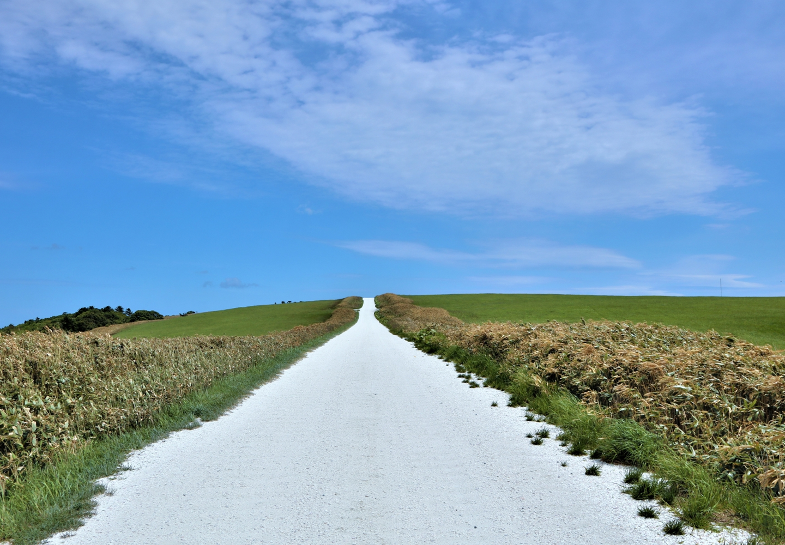
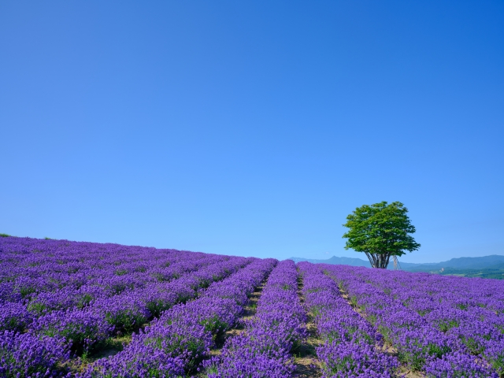
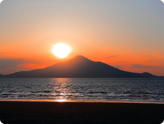
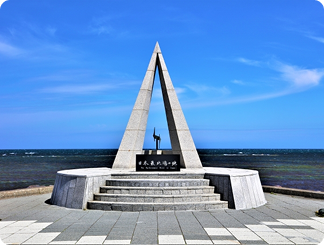
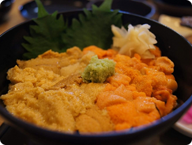
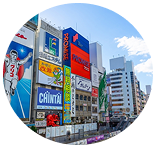
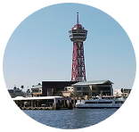
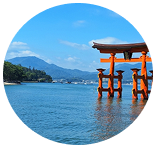

「試される大地」の別名を持つ北海道。冷涼な気候が育む四季折々の絶景（ラベンダー畑、紅葉、流氷）、漁場から直送される極上の海産物、そしてジンギスカンやラーメンなどのソウルフード。観光客を飽きさせない多様な魅力が凝縮されています。日本にいながらにして、まるで異国を旅しているかのような開放感と感動に出会える場所です。
アクセス情報各エリア毎に、おすすめの観光スポットと食事を紹介します
hakodate
北海道の最北端に広がる 「道北」は、雄大な自然と澄んだ空気が魅力のエリアです。宗谷岬や稚内をはじめ、日本離島の文化が息づく利尻・礼文、手つかずの原生林が残る大雪山系など、ここでしか出会えない絶景が点在します。夏は花々が彩る豊かな風景、冬は幻想的な流氷やクリアな星空が訪れる人を魅了。静けさとスケール感に包まれる、北海道らしさあふれる地域です。


利尻・礼文島は北海道北部の自然豊かな離島です。利尻山の雄大な景色と、礼文島の「花の浮島」と呼ばれる高山植物が彩る風景が魅力。澄んだ海と静かな時間が流れる、最北ならではの絶景スポットです。

宗谷岬は日本最北端の地で、北方領土を望むことができる絶景スポット。広がる海と風を感じながら、最果てならではの静寂と雄大な景色を楽しめます。記念碑や展望台もあり、旅の記念撮影にぴったりの場所です。

礼文島・利尻島の新鮮なウニを贅沢にのせた「ウニ丼」。海の恵みがぎゅっと詰まった濃厚な甘みと、とろける食感が特徴です。地元でしか味わえない旬のウニを、絶景とともに楽しめる逸品です。
稚内港で水揚げされた新鮮なタコを使った「タコしゃぶ」。薄切りのタコを熱々の出汁にさっとくぐらせると、プリッとした食感と旨味が広がります。地元ならではの海の恵みを贅沢に楽しめる逸品です。
各主要都市からのアクセス情報を記載しています

大阪から
福岡から
広島から